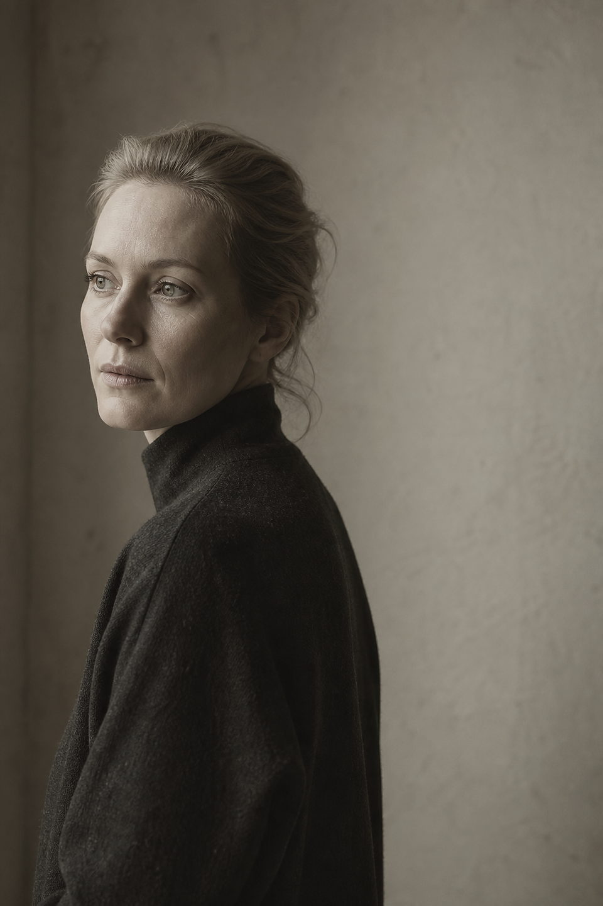
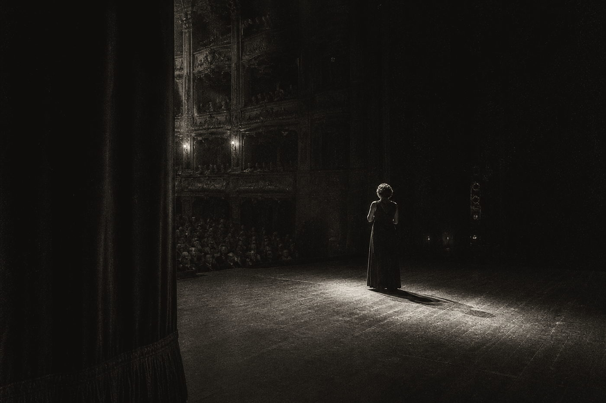
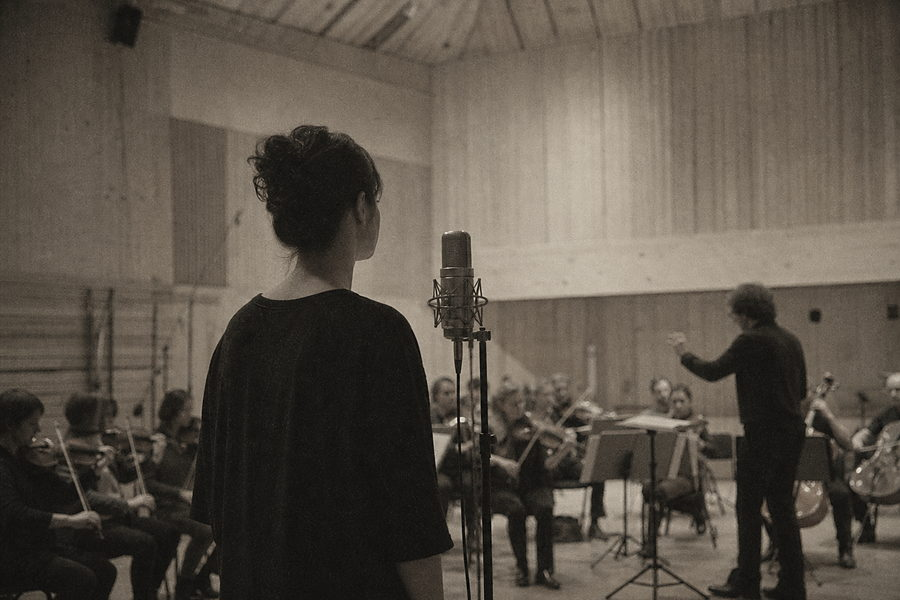

Lyric soprano Opera & concert Stockholm
Karolina Bengtsson
A voice of unhurried line and cool northern light — at home in the Nordic houses, the German concert tradition, and the Swedish song repertoire she has spent a decade returning to.

In rehearsal Rusalka — Kungliga Operan, Stockholm. Premiere 12 September 2026
01
Calendar
Season 2026 / 27. Dates are subject to confirmation by the presenting house. Enquiries through general management.
| Date | Work / Composer | Role | House / Orchestra | City | Status |
|---|---|---|---|---|---|
| September 2026 | |||||
| 12 Sep 2026 | RusalkaDvořák | Rusalka | Kungliga Operan | Stockholm | Tickets |
| 16 · 19 · 24 Sep 2026 | RusalkaDvořák | Rusalka | Kungliga Operan | Stockholm | Sold out |
| October 2026 | |||||
| 03 Oct 2026 | Vier letzte LiederR. Strauss | Soprano | Kungliga Filharmonikerna | Stockholm | Tickets |
| 22 · 25 Oct 2026 | Le nozze di FigaroMozart | Contessa Almaviva | Den Norske Opera | Oslo | Tickets |
| November 2026 | |||||
| 08 Nov 2026 | Liederabend — Sibelius · Rangström · Griegwith Måns Lindqvist, piano | Recital | Wigmore Hall | London | Sold out |
| 28 · 29 Nov 2026 | Ein deutsches RequiemBrahms | Soprano solo | Rundfunkchor Berlin | Berlin | Tickets |
| December 2026 | |||||
| 13 Dec 2026 | Weihnachtsoratorium, I–IIIJ. S. Bach | Soprano solo | Sveriges Radios Symfoniorkester | Stockholm | Broadcast |
| January 2027 | |||||
| 17 · 21 · 24 Jan 2027 | Peter GrimesBritten | Ellen Orford | Göteborgsoperan | Göteborg | On sale 02 Nov |
| February 2027 | |||||
| 06 · 09 Feb 2027 | Die ZauberflöteMozart | Pamina | Staatsoper Hamburg | Hamburg | Tickets |
| 27 Feb 2027 | Ljusgårdar, for soprano and orchestraAndrea Tarrodi — world premiere | Soprano | Konserthuset | Stockholm | Premiere |
| March — May 2027 | |||||
| 19 · 22 · 26 Mar 2027 | Così fan tutteMozart | Fiordiligi | Malmö Opera | Malmö | Tickets |
| 10 Apr 2027 | Matthäus-PassionJ. S. Bach | Soprano solo | Koninklijk Concertgebouw | Amsterdam | Tickets |
| 08 May 2027 | Recital — Stenhammar · Sjöberg · Alfvénwith Måns Lindqvist, piano | Recital | Drottningholms Slottsteater | Drottningholm | Tickets |
| Summer 2027 | |||||
| 12 Jun 2027 | Luonnotar, Op. 70Sibelius | Soprano | Oslo-Filharmonien | Oslo | On sale 15 Jan |
| 03 · 06 Jul 2027 | RusalkaDvořák | Rusalka | Savonlinna Opera Festival | Savonlinna | Announced |
No engagements listed for this year.
Archive of past seasons available on request press@karolinabengtsson.se
02
Biography
Last revised August 2026. Please do not abridge for programme use without approval.
“I am not interested in the large gesture. I am interested in the line — where it begins, and how long it can be held.”
Karolina Bengtsson was born in 1990 in Simrishamn, on the eastern shoulder of Skåne, and grew up between a fishing harbour and a church organ loft. She read musicology at Lunds universitet before entering the Operahögskolan in Stockholm, and completed her studies at the Guildhall School in London as a Birgit Nilsson stipendiat.
Her debut came in 2016 at Malmö Opera as Pamina — a performance Sydsvenskan described as “disarmingly plain, in the way that only very controlled singing can be.” Two years later she joined the ensemble of the Kungliga Operan in Stockholm, where across four seasons she sang Contessa Almaviva, Fiordiligi, Micaëla and Agathe, and first took up the role of Rusalka that has followed her across Europe since.
Since leaving the ensemble in 2022 she has divided her work between the Nordic houses, the German concert platform, and an increasingly central recital practice. She appears regularly with the Kungliga Filharmonikerna, Sveriges Radios Symfoniorkester, Oslo-Filharmonien and the Rundfunkchor Berlin, and made her Wigmore Hall debut in 2024 with a programme of Sibelius, Rangström and Grieg since recorded for BIS.
She holds a long commitment to the Swedish song repertoire — Ture Rangström and Wilhelm Stenhammar above all — and to new work: she has given first performances of music by Andrea Tarrodi, Britta Byström and Lisa Streich, and premieres Tarrodi’s Ljusgårdar for soprano and orchestra at the Konserthuset in February 2027.
She teaches each summer at the academy in Ingesund, and lives between Stockholm and Berlin.
Press
-
Bengtsson’s Rusalka was lit from within — silvered, unsentimental, and entirely without self-pity. She holds a phrase the way other singers hold a note.
Opera MagazineLondonNov 2025
-
Hon sjunger som om orden vore hennes egna — en sällsynt förening av intelligens och värme.
Göteborgs-PostenGöteborgMar 2025
-
An instrument of unusual evenness, deployed with something close to architectural intelligence. Nothing is spent that is not needed.
Dagens NyheterStockholmOct 2024
-
Der Strauss war außergewöhnlich: eine lange Linie, gehalten, als hätte der Atem kein Ende.
Berliner ZeitungBerlinJun 2024
03
Repertoire
Roles performed and in preparation, with concert and song repertoire. Complete list on request.
Stage
- RusalkaRusalkaDvořák
- Contessa AlmavivaLe nozze di FigaroMozart
- PaminaDie ZauberflöteMozart
- FiordiligiCosì fan tutteMozart
- Donna AnnaDon GiovanniMozart
- AgatheDer FreischützWeber
- TatyanaEugene OneginTchaikovsky
- Ellen OrfordPeter GrimesBritten
- MicaëlaCarmenBizet
- Gräfin MadeleineCapriccioR. Strauss · 2028
Concert & oratorio
- Soprano soloEin deutsches RequiemBrahms
- Soprano soloMatthäus-PassionJ. S. Bach
- Soprano soloMass in B minorJ. S. Bach
- SopranoSymphony No. 4Mahler
- SopranoVier letzte LiederR. Strauss
- SopranoLuonnotar, Op. 70Sibelius
- SolveigPeer GyntGrieg
- SopranoLjusgårdarTarrodi · 2027
Song
- CompleteSongs, Op. 17 & Op. 37Sibelius
- CycleHaugtussa, Op. 67Grieg
- CycleFrauenliebe und -lebenSchumann
- CycleFiançailles pour rirePoulenc
- SelectionPan · Melodi · Bön till nattenRangström
- SelectionAdagio · I skogen · Jungfru BlondStenhammar
- SelectionTonerna · Skogen soverSjöberg · Alfvén
04
Recordings
Selected discography. Excerpts play in the transport at the foot of the page; complete recordings are available from the labels.
-
BIS-2748
Ljusgårdar
Tarrodi · Byström · Saariaho — new Nordic works for soprano and orchestra
Sveriges Radios Symfoniorkester · Elin Hagman, cond.
2026
BIS Records
-
BIS-2617
Var det en dröm
Songs of Sibelius and Rangström
Måns Lindqvist, piano
2025
BIS Records
-
ALPHA 1082
Morgen
Strauss — Vier letzte Lieder and orchestral songs
Kungliga Filharmonikerna · Anna Hjelm, cond.
2024
Alpha Classics
-
ODE 1451-2
Bön till natten
Nordic Nocturnes — Rangström, Grieg, Sjöberg, Alfvén
Måns Lindqvist, piano
2023
Ondine
05
Film
Performance and documentary excerpts. Films are hosted here — nothing loads until you ask for it.


06
Representation
All engagement enquiries through general management. Press materials on request.
| General managementWorldwide | Nordisk Artist ManagementBirger Jarlsgatan 14, 114 34 Stockholm | Ingrid HallbergDirector | ingrid.hallberg@nordiskartist.se +46 8 555 09 20 |
|---|---|---|---|
| German-speaking EuropeDE · AT · CH | Artist Management RheinlandHohenzollernring 62, 50672 Köln | Matthias LorenzAssociate | m.lorenz@am-rheinland.de +49 221 55 79 0 |
| United Kingdom & IrelandUK · IE | Marlow & Grey Artists18 Mandeville Place, London W1U 3BE | Priya RamanArtist manager | priya@marlowgrey.co.uk +44 20 7580 3311 |
| Press & mediaDirect | Karolina BengtssonInterviews, photography, programme texts | Ellen SandgrenPress officer | press@karolinabengtsson.se Press kit · ZIP 48 MB |
Audition requests, masterclass invitations and student enquiries are read but not always answered. Please allow ten working days.